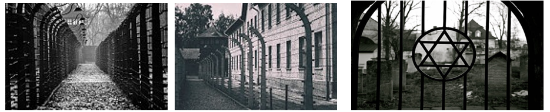

Sous l’occupation, le maréchal Pétain accepte les conditions imposées par Hitler et offre sa collaboration. Les Allemands confisquent les récoltes, les machines et les matières premières sans se soucier des besoins des Français. Les jeunes doivent travailler pour l’Allemagne et pour la guerre. Les industries sont également au service de l’Allemagne. Les Français sont dans une situation difficile car la nourriture manque et elle est rationnée. Un marché noir se développe pour trouver à manger.
Les Français doivent respecter la politique antisémite également imposée. Tous les juifs doivent porter une étoile jaune, ils sont déportés vers des camps de concentration.
Les juifs sont obligés de travailler, c’est le travail forcé mais les plus faibles seront exterminés en Allemagne et dans les pays occupés entre 1941 et 1942.


 À la suite de l’appel à la résistance du Général De Gaulle, des forces vont se mobiliser. Des groupes de maquisards vont s’organiser dans les bois pour freiner les troupes allemandes. Ils détruisent des ponts, font sauter des voies de chemin de fer et tendent des embuscades aux soldats allemands. La Résistance française est aidée par des guérilleros espagnols (environ 60 000), anciens républicains qui ont fui en France pendant la Guerre Civile et qui continuent à lutter contre Franco. D’autres ont lutté contre les forces de l’Axe en rejoignant les Forces françaises libres ou dans la Légion étrangère.
À la suite de l’appel à la résistance du Général De Gaulle, des forces vont se mobiliser. Des groupes de maquisards vont s’organiser dans les bois pour freiner les troupes allemandes. Ils détruisent des ponts, font sauter des voies de chemin de fer et tendent des embuscades aux soldats allemands. La Résistance française est aidée par des guérilleros espagnols (environ 60 000), anciens républicains qui ont fui en France pendant la Guerre Civile et qui continuent à lutter contre Franco. D’autres ont lutté contre les forces de l’Axe en rejoignant les Forces françaises libres ou dans la Légion étrangère.
Lorsque les troupes allemandes occupent la zone libre en France en novembre 1942, les Résistants sont poursuivis par la Gestapo (police secrète de l’Allemagne nazie) car ils donnent des informations aux Alliés, ils attaquent les convois (camions et trains des Allemands) et commettent des sabotages. Certains sont torturés puis fusillés..